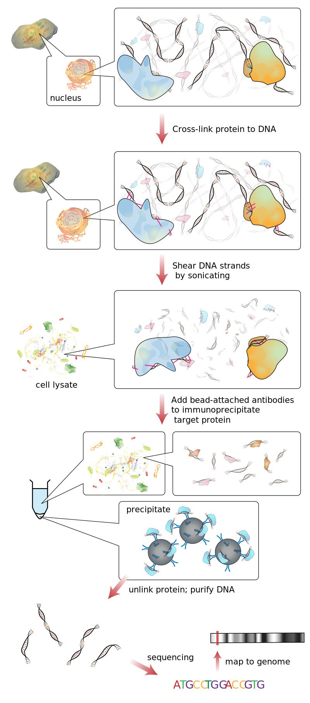

Transcription and DNA-Protein Binding
The central dogma of molecular biology
Recall that DNA is a double-stranded molecule consisting of the four nucleobases adenine, cytosine, guanine, and thymine. A gene is a region of an organism’s DNA that is transcribed into a single-stranded RNA molecule in which thymine is converted to uracil and the other bases remain the same.
The RNA transcript is then translated into an amino acid sequence. Because there are four different bases but twenty amino acids available, RNA is translated in codons, or triplets of nucleobases. The figure below shows the way in which codons are translated into amino acids, which is called the genetic code.
 The genetic code, which dictates the conversion of RNA codons into amino acids.
The genetic code, which dictates the conversion of RNA codons into amino acids.
DNA can be thought of as a blueprint for storing information that flows from DNA to RNA to protein. This flow of information is called the central dogma of molecular biology (see figure below).
 The central dogma of molecular biology states that molecular information flows from DNA in the nucleus, into the RNA that is transcribed from DNA, and then into proteins that are translated from RNA. Image courtesy: Dhorpool, Wikimedia commons user.
The central dogma of molecular biology states that molecular information flows from DNA in the nucleus, into the RNA that is transcribed from DNA, and then into proteins that are translated from RNA. Image courtesy: Dhorpool, Wikimedia commons user.
Transcription factors control gene regulation
All of your cells have essentially the same DNA, and yet your liver cells, neurons, and brain cells are able to serve different functions. This is because the rates at which these genes are regulated, or converted into RNA and then protein, vary between genes in different tissues.
Gene regulation typically occurs at either the DNA or protein level. At the DNA level, regulation is modulated by transcription factors, master regulator proteins that bind upstream of genes and serve to either activate or repress a gene’s rate of transcription. Activation will cause the gene to be “upregulated”, with increased transcription, and repression will cause the gene to be “downregulated”.
Note that by the central dogma, transcription factors are involved in a sort of feedback loop. DNA is transcribed into RNA, which is translated into the protein sequence of a transcription factor, which then binds to the upstream region of some other gene and changes its rate of transcription.
Transcription factors are vital for the cell’s response to its environment because extracellular stimuli can serve to activate a transcription factor via a system of signaling molecules that convey a signal through relay molecules to the transcription factor (see figure below). Only when the transcription factor is activated will it regulate its target protein(s).
 A cell receiving a signal which triggers a response in which this signal is “transduced” into the cell, resulting in transcription of a gene. We will discuss signal transduction in greater detail in a future module.1
A cell receiving a signal which triggers a response in which this signal is “transduced” into the cell, resulting in transcription of a gene. We will discuss signal transduction in greater detail in a future module.1
In a future module, we will discuss the details of how the cell detects an extracellular signal and conveys it as a response within the cell. In this module, we concern ourselves with the study of the relationship between transcription factors and the genes they regulate.
Determining if a given transcription factor regulates the expression of a given gene
Over the years, a number of both computational and experimental approaches have been developed to identify the collection of genes that a given transcription factor regulates.
For example, genes that are regulated by the same transcription factor often share the same short region of DNA preceding the genes where the transcription factor binds. Computational biologists have developed algorithms to scan through the genome, looking for genes with similar regions preceding them, and predicting that they are regulated by the same transcription factor. If you are interested in learning more about these algorithms, we encourage you to check out Chapter 2 of Bioinformatics Algorithms: An Active Learning Approach, which can be read for free online.
A widespread experimental practice for determining whether a protein bonds to a given region of DNA is called ChIP-seq2, which is short for chromatin immunoprecipitation sequencing. This approach, which is illustrated in the figure below, combines an organism’s DNA with a collection of proteins that bond to DNA (which in this case would be transcription factors). After allowing for the proteins to bond naturally to the DNA, the DNA (with proteins attached) is cleaved into much smaller fragments of a few hundred base pairs. As a result of this process, we obtain a collection of DNA fragments, some of which are attached to protein.
The question is how to isolate the fragments of DNA that are bound to a single transcription factor of interest so that we can infer the fragments of DNA to which that transcription factor binds.
The clever trick is to use an antibody (i.e., a protein that your immune system produces to identify foreign pathogens). The antibody is designed to identify a single protein, and it is attached to a bead. Once the antibody attaches to the protein target, a single complex is formed consisting of the DNA fragment, the transcription factor bonded to the DNA, the antibody that recognized the transcription factor, and the bead bonded to the antibody. Because of the bead, these complexes can be filtered out as “precipitate” from the solution, and we are left with just the DNA fragments that are bound to our transcription factor.
In a final step, we unlink the protein from the DNA, leaving a collection of DNA fragments that were previously bonded to a single transcription factor. These fragments are read using DNA sequencing to determine the order of nucleotides on each fragment. Once we have read the fragments, we can then scan through the genome to determine the genes that these fragments precede. We can then postulate that these are the genes regulated by the transcription factor!
 An overview of ChIP-seq. Figure courtesy Jkwchui, Wikimedia Commons user.
You may also like to check out the following excellent video on identifying genes regulated by a transcription factor. This video was produced by students in the 2020 PreCollege Program in Computational Biology at Carnegie Mellon. The presenters won an award from their peers for their work, and for good reason!
STOP: How do you think that researchers measure whether a transcription factor activates or inhibits a given gene?
Organizing transcription factor information
As a result of both computational and experimental techniques, we have learned a great deal about which transcription factors regulate which genes. But what can we do with this information?
We would like to organize the relationships between transcription factors and the genes they regulate in a way that will help us identify patterns in these relationships. In the next section, we will see that consolidating gene regulatory information into a network will allow us to infer how cells have evolved to quickly change the expression of their genes in response to a dynamic environment.
-
CC https://www.open.edu/openlearn/science-maths-technology/general-principles-cellular-communication/content-section-1 ↩
-
Johnson, D. S., Mortazavi, A., Myers, R. M., & Wold, B. (2007). Genome-wide mapping of in vivo protein-DNA interactions. Science, 316(5830), 1497–1502. https://doi.org/10.1126/science.1141319 ↩